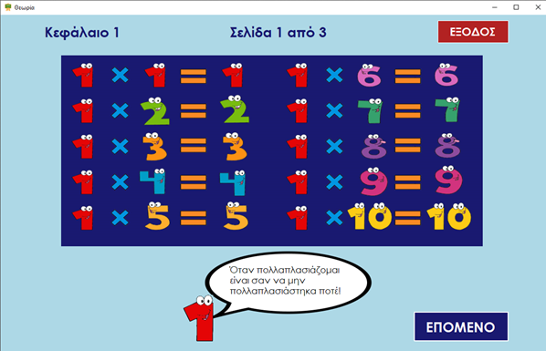
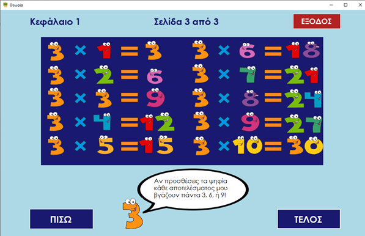
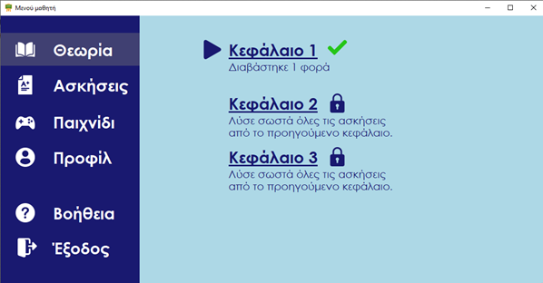
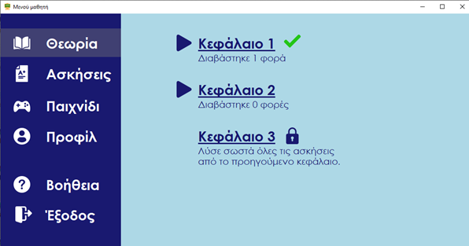

Online βοήθεια της εφαρμογής
Θεωρία
Πατώντας το κεφάλαιο που επιθυμεί, ο μαθητής μπορεί να δει το θεωρητικό υπόβαθρο κάθε κεφαλαίου πριν δοκιμάσει τις γνώσεις του στις ασκήσεις. Ο αριθμός που έχει διαβάσει κάθε μαθητής το εκάστοτε κεφάλαιο αποθηκεύεται στο προφίλ του και μπορεί και ο ίδιος να έχει πρόσβαση σε αυτό το στατιστικό στοιχείο.
Στην εφαρμογή μας έχουμ τρία κεφάλαια όπου εμπεριέχουν:
- Κεφάλαιο 1: προπαίδεια αριθμών 1 έως 3
- Κεφάλαιο 2: προπαίδεια αριθμών 4 έως 6
- Κεφάλαιο 3: προπαίδεια αριθμών 7 έως 10
Ακολουθούν ενδεικτικές εικόνες από το πρώτο κεφάλαιο.
 Επιστρέφοντας στο κεντρικό μενού ο μαθητής λαμβάνει την ένδειξη ότι έχει διαβάσει τουλάχιστον μία φορά το κεφάλαιο 1, ενώ για να μπορεί να έχει πρόσβαση στο κεφάλαιο 2 θα πρέπει να καταγράψει σκορ 10 στα 10 στο τεστ που αναφέρεται στο κεφάλαιο 1.
Όταν, ο μαθητής καταφέρει να περάσει επιτυχώς τις ασκήσεις του κεφαλαίου 1, τότε θα ξεκλειδώσει το κεφάλαιο 2, όπως φαίνεται και στην παρακάτω εικόνα.
